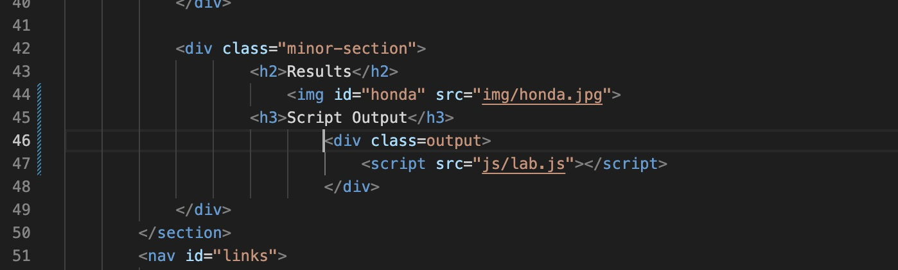
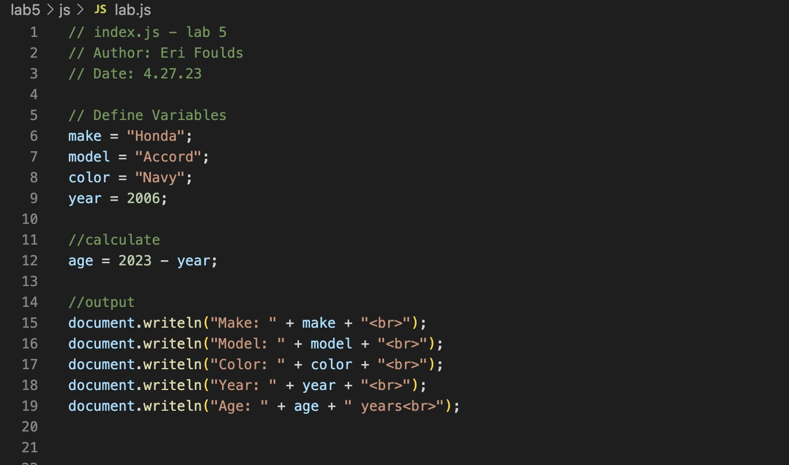
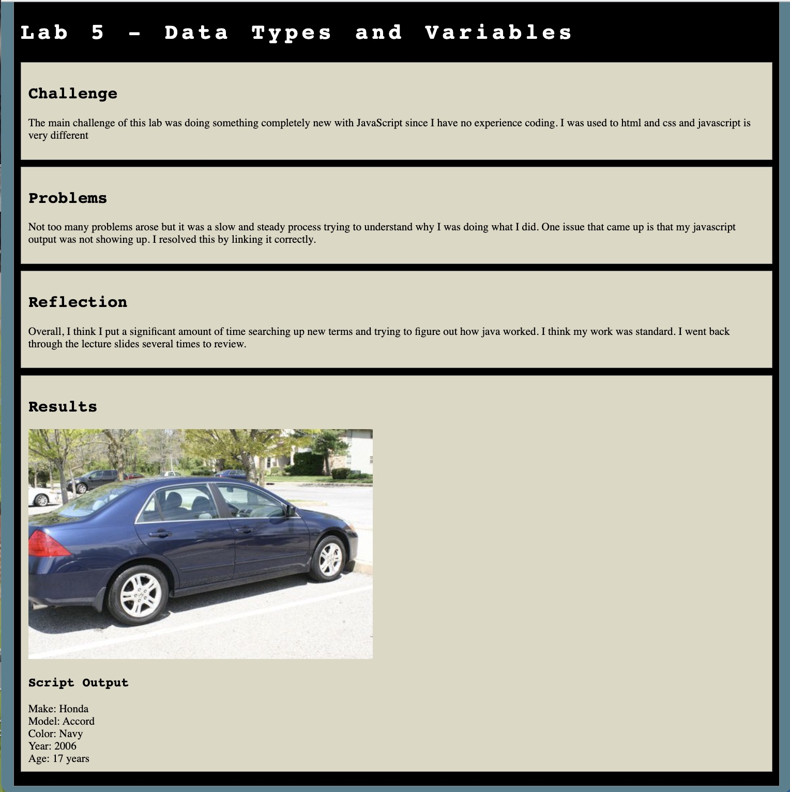

Lab 14 - Debugging Tools & Strategies
Challenge
The challenge of this lab was to go back to old labs and debug them.
Problems
The main issue that arose was that the reason why previous labs had bugs in them was because I did not know how to fix it. For this reason, it was pretty challenging trying to figure out how to solve an issue I did not know how to previously solve. However, since some time passed since I last did the labs I was able to successfully debug one since my understanding of Javascript got better.
Reflection
This lab was very refreshing but it was still challenging since we had to go up against problems we couldn't fix before. It was nice because once the debugging went well, I was able to resubmit my old lab. I put significant time into figuring out what I did wrong.
Results
I managed to debug lab 5 and the results are below.Debugging
HTML
JS
In lab 5 previously there was no script output or image showing up in my webpage. My main issue was figuring out how to link my javascript properly. This was the first javascript assignment I did on my own so it was frustrating not knowing why my output wasn't showing up. I fixed it by linking it properly. I originally thought the JS was named lab5 but it turned out to just be named lab. It was confusing since the entire time I was referencing other source codes and I did not really have an understanding of what makes something link and show up.